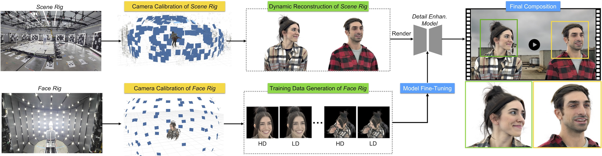
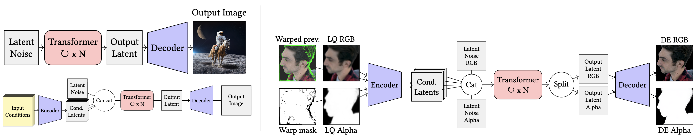

We present a unique system for large-scale, multi-performer, high resolution 4D volumetric capture providing realistic free-viewpoint video up to and including 4K resolution facial closeups. To achieve this, we employ a novel volumetric capture, reconstruction and rendering pipeline based on Dynamic Gaussian Splatting and Diffusion-based Detail Enhancement. We design our pipeline specifically to meet the demands of high-end media production. We employ two capture rigs: the Scene Rig, which captures multi-actor performances at a resolution which falls short of 4K production quality, and the Face Rig, which records high-fidelity single-actor facial detail to serve as a reference for detail enhancement. We first reconstruct dynamic performances from the Scene Rig using 4D Gaussian Splatting, incorporating new model designs and training strategies to improve reconstruction, dynamic range, and rendering quality. Then to render high-quality images for facial closeups, we introduce a diffusion-based detail enhancement model. This model is fine-tuned with high-fidelity data from the same actors recorded in the Face Rig. We train on paired data generated from low- and high-quality Gaussian Splatting (GS) models, using the low-quality input to match the quality of the Scene Rig, with the high-quality GS as ground truth. Our results demonstrate the effectiveness of this pipeline in bridging the gap between the scalable performance capture of a large-scale rig and the high-resolution standards required for film and media production.
Actors perform in the Scene Rig, where full-body performances are captured. Using our Poly4DGS framework, we reconstruct the performance. The same actors are then captured in the Face Rig. We generate Poly4DGS models for a portion of their facial performance: a high-quality model (HQGS, 4M Gaussians) and a low-quality model (LQGS, 50K-200K Gaussians). These reconstructions are used to train an Image Enhancement Module which refines the renderings of the low-quality GS to be like the high quality one. Finally, the trained model is used to enhance renderings from the 4DGS performance.

Architectural changes made to the base Flux model. Starting from the Latent Diffusion Architecture, we add input channels to condition the network. To improve temporal stability and generate an alpha channel, we condition our model on the previous warped output, a validity mask, and both the LQ RGB and Alpha. We also double the size of the latent space to predict RGB and Alpha jointly.

@article{DEGS,
author = {Philip, Julien and Ma, Li and Clausen, Pascal and Xian, Wenqi and Ta\c{s}el, Ahmet Levent and He, Mingming and Yu, Xueming and George, David M. and Yu, Ning and Pilarski, Oliver and Debevec, Paul},
title = {Detail Enhanced Gaussian Splatting for Large-Scale Volumetric Capture},
year = {2025},
issue_date = {December 2025},
publisher = {Association for Computing Machinery},
address = {New York, NY, USA},
volume = {44},
number = {6},
issn = {0730-0301},
url = {https://doi.org/10.1145/3763336},
doi = {10.1145/3763336},
journal = {ACM Trans. Graph.},
month = dec,
articleno = {250},
numpages = {13},
keywords = {gaussian splatting, super resolution}
}